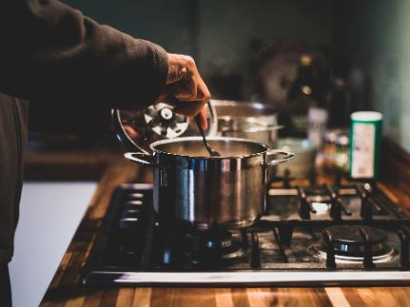
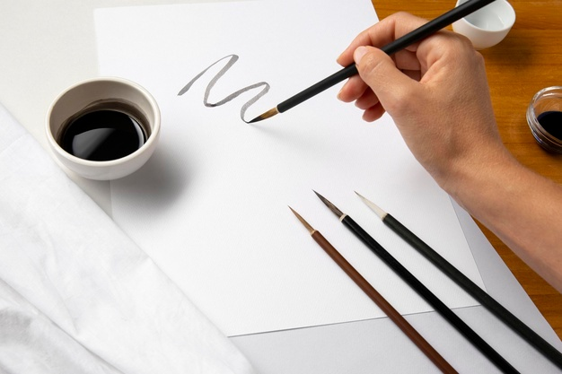
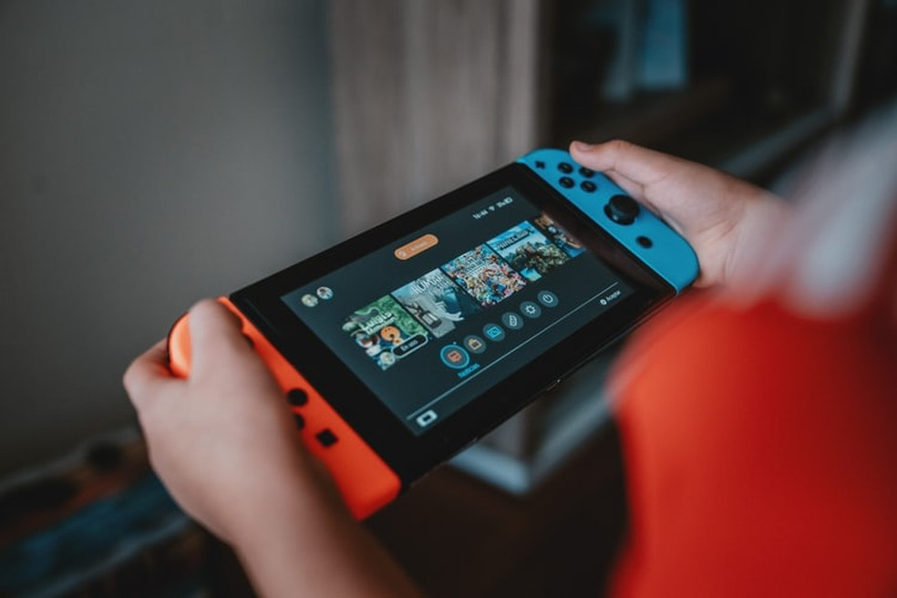

UM POUCO SOBRE MIM
Meu nome é Lucas Antonio, tenho 16 anos, e nasci
aqui mesmo em São Paulo. Meus pais são divorciados,
vivo com a minha mãe e avós, mesmo meu pai não morando
comigo, vejo ele com bastante frequência. Tenho um cachorro
chamado Bolt, já bem velhinho mas ainda tem bastante energia.
MEUS GOSTOS
Desde de pequeno eu sempre gostei muito de ficar na
cozinha, em 2015 até entrei num curso de culinária,
posso dizer que isso sempre foi uma coisa que eu adoro
fazer. Também gosto bastante de volêi e handebol, mas
nunca fui muito fã de futebol. Minha comida favorita, eu
diria que é pastel, principalmente os de feira
MEUS PASSATEMPOS

COZINHAR - como já foi dito antes desde de pequeno eu
já gostava de ficar perto do fogão

DESENHAR - gosto de desenhar pra acalmar, desenho
sempre no papel, mas gostaria de aprender desenho digital

JOGAR - Peguei o gosto de jogar quando ganhei meu
nintendo 3ds quando era menor,desde então adoro jogar os jogos da
nintendo e outros de computador
ESCOLA
Estou no módulo a 10 anos, estudo aqui desde o 1° ano,
sempre tive notas boas, ainda bem, mas teve algumas vezes
que eu me dei mal, mas consegui recuperar. Sempre gostei
de ciências. Por causa da pandemia, perdi muitas experiencias,
mas também aprendi a valorizar esses pequenos momentos.
METAS 2022
Pro meu 2022, eu gostaria de começar a aprender desenho
digital, que é algo que eu realmente quero fazer. Também
gostaria de iniciar um curso técnico, não pesquisei muito
sobre o assunto, mas tenho uma ideia geral.
E por ultimo eu queria aprender tocar um instrumento,
como teclado. São metas bastante diferentes umas das
outras, mas são 365 dias
pra conseguir alcançar esses abjetivos.